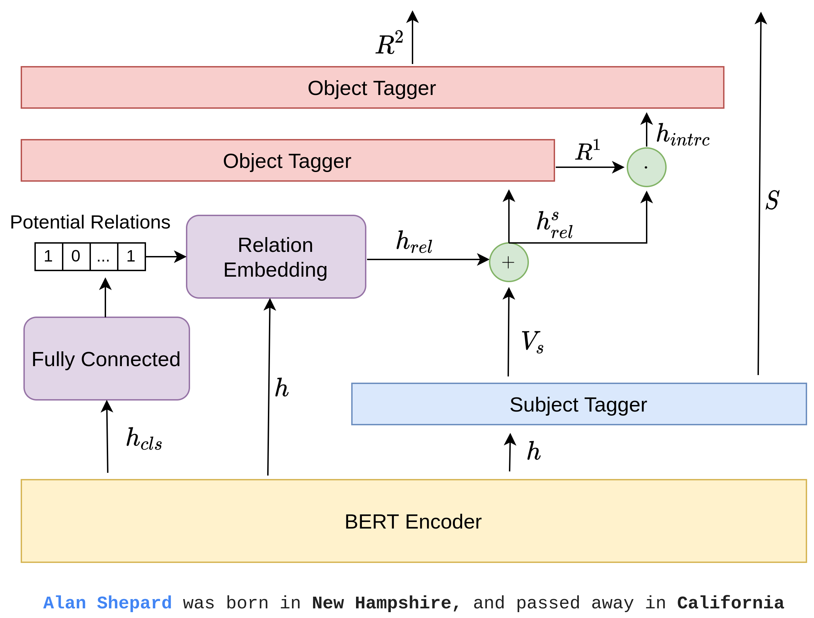
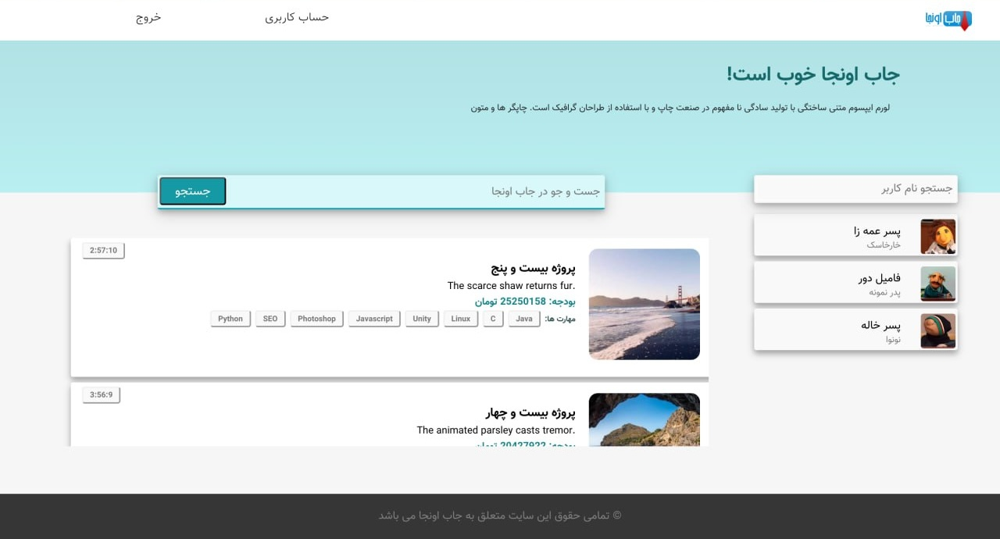
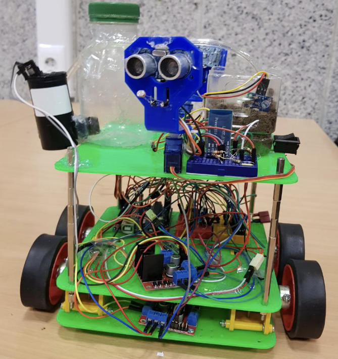
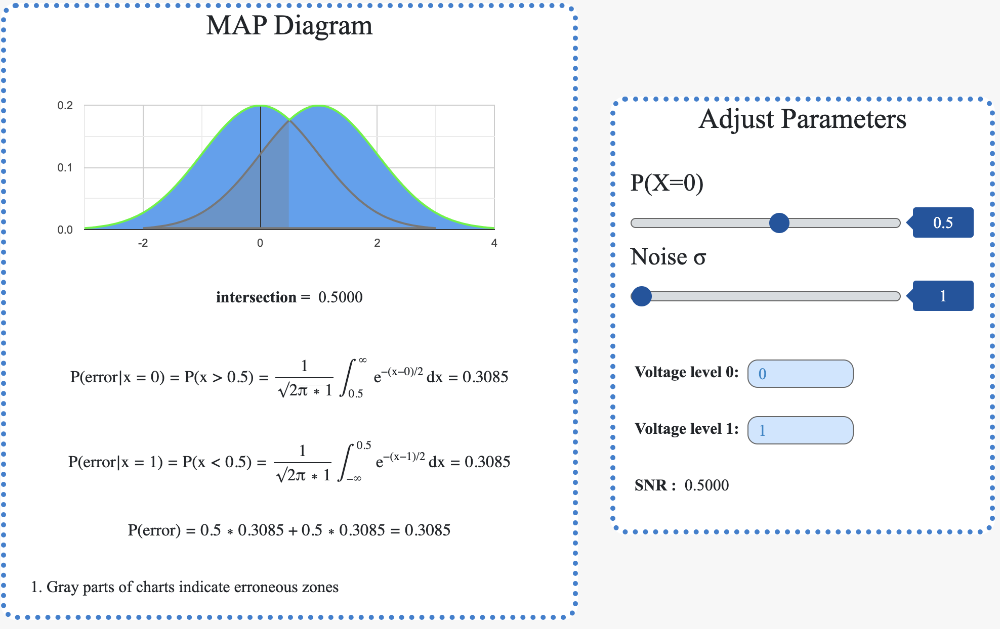
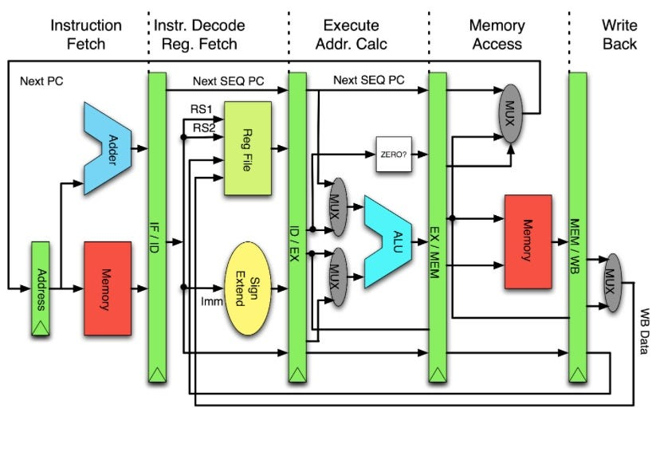

M.Sc Graduate @ University of Alberta | Interested in AI & Software Development

In this project, we address the challenge of joint entity and relation extraction from unstructured text, focusing on the issue of overlapping relational triples—instances where multiple relationships share common entities. Building upon the CASREL framework, we introduce a relation-aware model that incorporates both relation semantics and interactions to enhance extraction accuracy. Our approach leverages the inherent meanings of relations and their co-occurrence patterns to improve the identification of entities and their relationships. Experimental evaluations on the WebNLG dataset demonstrate that our model achieves a notable improvement, with an absolute gain of 0.96 in F1-score over the original CASREL framework. This advancement underscores the effectiveness of integrating relation-aware mechanisms in complex information extraction tasks.
In this project, I implemented the closed-form solution to linear regression from scratch, utilizing matrix-vector representations for data handling and engaging in data visualization techniques. The project involved generating data through specific transformations, followed by performing linear regressions to predict variables in both directions. This approach provided insights into the phenomenon of "regression to the mean." Additionally, I explored the application of mini-batch gradient descent optimization for linear regression, specifically applied to the Boston housing dataset. This included normalizing features and outputs, implementing a train-validation-test framework, and experimenting with non-linear features and regularization techniques to prevent overfitting. Through this comprehensive exercise, I gained practical experience in linear regression, optimization methods, and the importance of feature engineering in predictive modeling.
Also, I investigated the application of linear and logistic regression models for binary classification tasks. By training both models on two distinct datasets, I observed that linear regression, typically used for continuous outcomes, is not well-suited for classification problems due to its assumptions and output range. In contrast, logistic regression, designed for binary outcomes, provided more accurate and reliable classifications. This comparison underscored the importance of selecting appropriate models based on the nature of the prediction task.
This project showcases my implementation of Huffman coding, convolutional coding, and the Viterbi algorithm, key techniques in data compression and error correction. Huffman coding optimizes data storage by reducing redundancy, while convolutional coding enhances the reliability of transmitted data. The Viterbi algorithm is employed for efficient error detection and correction. Through Python-based implementations, this project demonstrates my ability to apply fundamental concepts in data communication, signal processing, and algorithm optimization. It highlights my expertise in developing efficient, real-world solutions for encoding and error detection in digital systems.

This project is a full-stack web platform designed as a job marketplace for developers, where freelancers can bid on projects based on their skills and qualifications. The frontend was initially built using HTML, CSS, and Bootstrap, then transitioned to React for a more dynamic and interactive user experience. The backend was developed with Java, using JSP for server-side rendering before migrating to a RESTful API architecture. The system includes authentication with JWT, database integration with MySQL, and real-time project updates. The project also incorporates Docker for containerization, ensuring deployment efficiency in production environments. With features like automated auctions, skill endorsements, and API standardization, this project showcases my ability to design and implement a scalable, secure, and high-performance web application from concept to deployment.

In this project, we designed and implemented an intelligent mobile planter system to automate plant care through sensor-driven decision-making. The system integrates moisture sensors to monitor soil conditions and adjusts watering accordingly using an automated pump. Additionally, light sensors and ultrasonic distance sensors enable the planter to reposition itself toward optimal lighting conditions while avoiding obstacles. The project was developed using Arduino with C++, incorporating hardware components like MPU6050 for angle measurement, HC-05 Bluetooth module for user interaction, and L298N motor drivers for mobility control. This project highlights my ability to work with embedded systems, robotics, and sensor-based automation, showcasing a practical application of cyber-physical systems (CPS) for smart agriculture.

The MAP Visualizer project is an interactive web-based tool designed for statistical data visualization, primarily focusing on probability distributions and decision boundaries. The tool leverages jStat for statistical calculations, Google Charts for dynamic plotting, and Bootstrap for responsive design. At its core, it generates probability density functions (PDFs) for normal distributions, computes key statistical values, and visualizes them in an interactive chart. Users can manipulate parameters such as mean, standard deviation, and probability values, dynamically updating the visualization to reflect changes in statistical models. The project showcases expertise in frontend development, data visualization, and interactive web applications, making it a valuable tool for statistical analysis, signal processing, or decision theory applications.

This project is a five-stage pipelined MIPS processor designed in Verilog, implementing key components such as Instruction Fetch (IF), Instruction Decode (ID), Execution (EXE), Memory Access (MEM), and Write-Back (WB). Modules like IFID, IDEXE, EXEMEM, and MEMWB ensure proper instruction flow across pipeline stages. To enhance performance and avoid pipeline hazards, the processor includes a Forwarding Unit and a Hazard Detection Unit (HDU), which handle data and control hazards by forwarding values and stalling execution when necessary. The Controller module manages instruction execution, while ConditionCheck handles branching and decision-making. Additionally, the cache controller and address mapping modules optimize memory access efficiency. This project highlights advanced digital design skills, including pipelined architecture, memory hierarchy, and hazard resolution techniques, making it a strong demonstration of hardware-level computer architecture and processor design expertise.